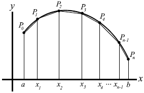

Parabolic Arc Length
Points: 6 kyu
Kata ID: 562e274ceca15ca6e70000d3
We want to approximate the length of a curve representing a function y = f(x) with a <= x <= b.
First, we split the interval [a, b] into n sub-intervals with widths
h1, h2, ... , hn
by defining points
x1, x2 , ... , xn-1 between a and b.
This defines points
P0, P1, P2, ... , Pn on the curve
whose x-coordinates are a, x1, x2 , ... , xn-1, b
and y-coordinates f(a), f(x1), ..., f(xn-1), f(b) .
By connecting these points, we obtain a polygonal path approximating the curve.
Our task is to approximate the length of a parabolic arc representing the curve y = x * x with x in the interval [0, 1].
We will take a common step h between the points xi: h1, h2, ... , hn = h = 1/n
and we will consider the points
P0, P1, P2, ... , Pn on the curve.
The coordinates of each Pi are (xi, yi = xi * xi).
The function len_curve (or similar in other languages) takes n as parameter (number of sub-intervals) and returns the length of the curve.

Note:
When you "Attempt" tests are done with a tolerance of 1e-06 (except in PureScript where you must truncate your result to 9 decimal places).